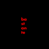
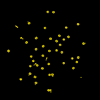
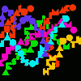

| Clip poemas do livro "Não" (2003)
|
cidadecitycité
(1999)
(utiliza plug-in Flash) |
rever (1999)
(utiliza plug-in Flash) |

ininstante (1999)
(utiliza plug-in Flash) |

sos (2000)
(utiliza plug-in Flash)
|
criptocardiograma
(utiliza plug-in Flash)
|

sem saida
(utiliza plug-in Flash)
|
portas
do ouver
(utiliza plug-in ShockWave)
|
doors
of eyear
(utiliza plug-in ShockWave)
|